Xscreen Sports Data Overlay
Beta 0.60 .重大更新：导出支持透明通道的webm文件，需要剪辑软件支持(Shotcut..)。感谢开源社区Mediabunny的不懈努力。
No client, user-friendly, fast, and aesthetic
Generate Video
Information
DashB
Time
Dist.
Map
Chart
Attr
Text
Cycling
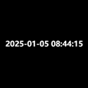
Time
Date
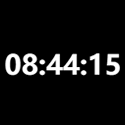
Time
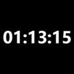
Sport ET
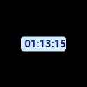
Sport ET
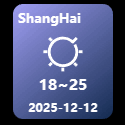
Weather
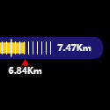
Distance
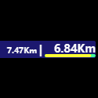
Distance
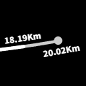
Distance
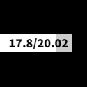
Distance
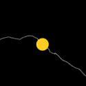
Elevation
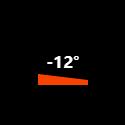
Slope
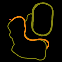
Route
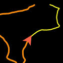
Route
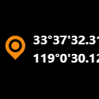
Location
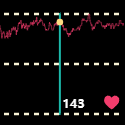
Heart
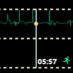
Pace
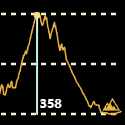
Elevation
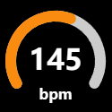
Cadence
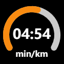
Pace
Cadence
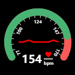
Heart
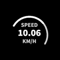
Speed
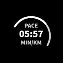
Pace
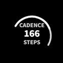
Cadence
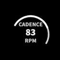
Rpm
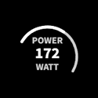
Power
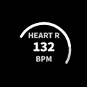
Heart
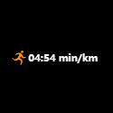
Pace
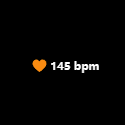
Heart
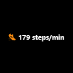
Cadence
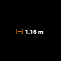
Step
Power(.fit)
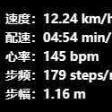
All
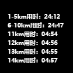
Lap
User Lap (.fit)
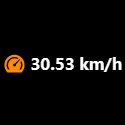
Speed
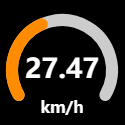
Speed
Speed
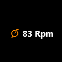
Rpm
Rpm
Power(.fit)
Power
准备生成视频...